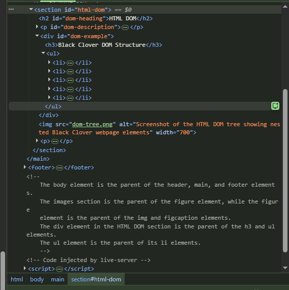

Images
Black Clover is a fantasy anime and manga series about magic knights, friendship, rivalry, and dreams.

Yuno

Yuno is Asta's childhood friend and rival. He is a talented mage with strong wind magic.
Black Bulls

The Black Bulls are a Magic Knight squad known for their unique members and powerful abilities.
Hyperlinks
Hyperlinks allow users to navigate to another section of the project, visit an external website, send an email, or jump to a specific part of the webpage.
Internal Link
External Link
Email Link
Same-Page Anchor Link
Multimedia
HTML5 allows audio and video files to be added directly to a webpage.
Black Clover Audio
Black Clover Video
HTML DOM
The HTML Document Object Model, or DOM, represents a webpage as a tree of elements. Each element can have a parent and child elements.
Black Clover DOM Structure
- Asta
- Yuno
- Black Bulls
- Magic Knights
- Wizard King

The screenshot above shows the HTML DOM tree of this Black Clover webpage.